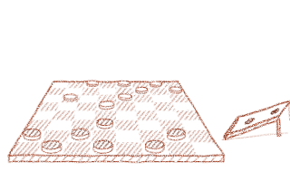

Rulebook answers questions about a rulebook, citing the rule behind every claim. These notebooks run real questions through its own pipeline, one stage at a time, on three small sample rule sets: checkers, tennis and poker.
Each page below shows a fresh run with every result filled in, so you can read it without installing anything. Every notebook also runs in Colab, free with a Google account.

A first walk through the three stages of a bare-bones RAG pipeline: ingest and chunk, embed and retrieve, and generate.
One stage each, in this order: each one picks up where the last left off.

What an embedding is, and how retrieval uses one.

How to tell whether retrieval is any good.

Why retrieval finds passages about the question rather than ones that answer it, and a second stage that fixes the order.
How a rulebook is cut into the pieces retrieval returns and Claude cites.
What Claude is given, why every claim must cite a rule, and how it declines questions the rules don't cover. Will need an Anthropic key.
From a clone of the repo:
uv sync uv run jupyter lab
Then add a rulebook of your own and ask it questions; the README has the details.